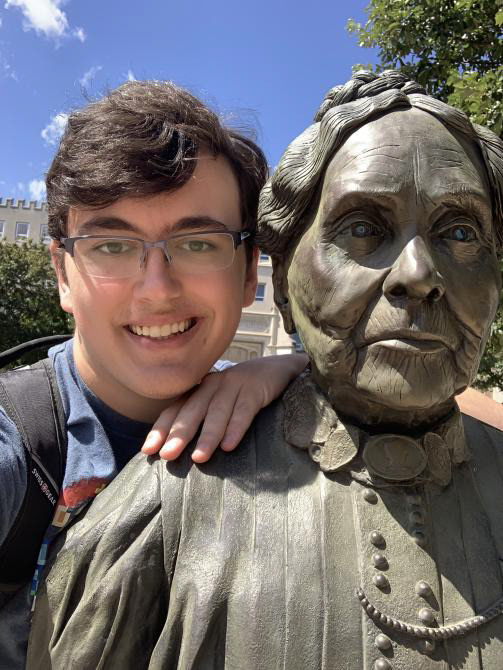

Morgan Harrell
(773) 675-0292 | mharrell@mail.bradley.edu | Linkedin

Summary
My name is Morgan Harrell. I am a multi-disciplinary creative who
specializes in video editing and VFX. I have years of experience with
game development, video editing, writing, and general coding,
and I am a budding web developer.
Education
- Bachelor of Fine Arts, Game Design Major, Creative Writing Minor - Bradley University (2018-2023)
Relevant Work Experience
Freelance Editor - Self Employed
June 2023 - Present
- Working as a freelance editor for online content creators
- Provided entertaining edited videos to the client's satisfaction
- Developed an aptitude for business and working with clients
Game Design Intern - Change Lab
September 2022 - December 2022
- Worked for Change Lab as part of Bradley University's Hollywood semester program
- Worked on prototypes for interactive teaching experiences
- Improved organization, teamwork, and UI skills
Head Instructor - Kids STEM Studios
June 2022 - August 2022
- Head instructor of a class designed to teach kids how to code and develop games.
- Worked with children for long hours while prioritizing a fun, safe environment.
- Cultivated organization, managerial, and planning skills
Proprietor/Instructor - Harrell's Coding Camp
May 2020 - August 2020
- Conceived of, created, marketed, and taught an introductory coding and game design class for six students aged 8 to 15
- Taught a 6 week, six hours per week program for kids during the peak of Covid.
Skills
Abstract skills
- Well-versed in shader and VFX work.
- Excellent at interpreting existing code and teaching advanced concepts to all ages
- Accomplished public speaker and improv performer
- Entrepreneurial aptitude and customer service skills
- Extremely creative and unorthodox mind
Program knowledge
Programming Languages
- Java
- C
- C#
- Python
- HTML, CSS, Javascript
- SQL
- GLSL ES, HLSL
Game Engines
- Unity (700+ hours)
- Gamemaker (2000+ hours)
Other Programs
- Adobe Suite (Premiere, After Effects, Photoshop, Audition)
- Open Broadcast Software
Achievements
- Lead three separate free games with 10+ contributors over the course of several months
- Team member on game design projects selected for FUSE in 2019, 2020, and 2022
- Won "Best Design Award" for FUSE 2022
- Worked on Bradley University Capstone Program as VFX Artist for 6 months
- Achieved minor influencer status on sites like TikTok, Twitter, and YouTube
Other